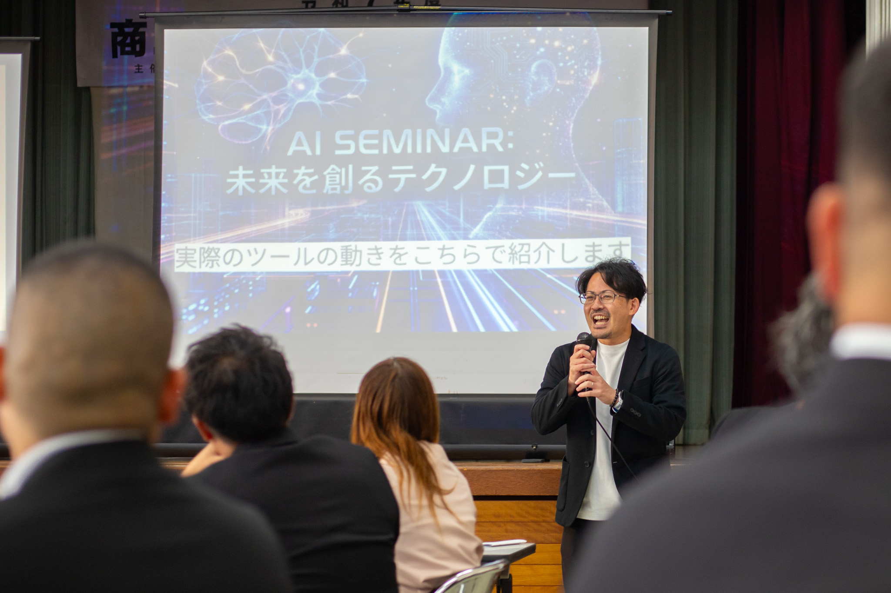
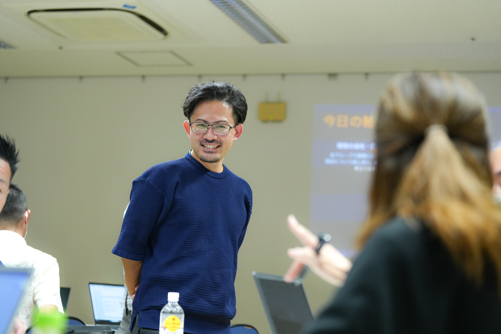

01
AI Utilization
AI活用
会社の困りごとに合わせたAI活用を提案。仕組みの構築・導入から社内浸透まで伴走します。CAIO（最高AI責任者）としての就任も可能。
View Detail
Philosophy
AIと人事制度。
どちらかだけをやっても、会社は変わりません。
AIを導入するだけでは、現場にツールや仕組みが残るだけで、「AI導入により実現したいこと」まで到達できないことがほとんど。一方で、組織開発だけを進めようとしても、日々の業務に追われる社員には「変化するゆとり」がありません。
U-WANは、このふたつを切り離さないこと を大切にしています。AIで徹底的に「作業」を効率化し、そこで生まれた「時間」を「人の成長と対話」に投資する。このサイクルを回すことで、社長が現場に張り付かなくても回る、強い組織へと進化していきます。
Service
まず時間をつくる。そこから、人を育てる。そして、向かう先を定める。
U-WANのサービスは、この順番で設計されています。すべての基盤は「対話」です。
01
AI Utilization
会社の困りごとに合わせたAI活用を提案。仕組みの構築・導入から社内浸透まで伴走します。CAIO（最高AI責任者）としての就任も可能。
View Detail02
Organization & People
会社のカラーや今いる人に合わせた人材育成・組織開発。研修・1on1・全社員ヒアリングまで、丁寧にアプローチします。
View Detail03
Management
社長の人生観を起点にした、独自性のある経営戦略づくり。数字・会計・コスト構造まで、抜本的な改善にコミットします。
View Detail
Approach
U-WANの一番の特徴は、「これをやって終わり」と型で区切らず、本質的な支援を行うこと。外科手術のように悪い箇所を直して終わり
ではなく、支援が終わった後も、効果が持続する状態を目指します。
Works
U-WANがご一緒してきた企業様・ご依頼者様の一部をご紹介します。
AI × Management
代表取締役 ／ 我那覇 生嚴（がなは せいげん）様
IssueAIを活用したシステム構築、会社の困りごとに柔軟に対応してほしい。
Result1年をかけて"確実に使える"AI活用による独自システムを構築。多様な困りごとにも柔軟に対応。
Organization & People
人事担当者 様
Issue自身のキャリア相談・組織の文化や体制を再構築したい。
Result役員が明るくなり、社員の発言が増えた。部署間の連携が活発に。
Management & Startup
代表 ／ 比嘉 たか子 様
Issue起業前はビジネスの基礎を、起業後はサービス設計のアドバイスが欲しい。
Result価格設定やサービス展開など、持続可能な設計をし、無事開業。
Voice
喜びの声、続々届いています。
実状に合わせた最適解を提案
単なる"外部コンサル"ではなく、会社の想いや戦略を深く理解した上で、実情に合わせて最適な支援を提案してくれる存在です。
テンプレじゃないコンサル
100社以上のコンサル会社と接触してきましたが、多くがテンプレート的な提案でした。棚原さんは、まず対象の状況を把握・分析してから提案してくれて、姿勢からまったく違います。
Contact
「うちの課題、はっきりしないまま相談していいのかな」──
その段階こそ、U-WANの出番です。整理するところから、ご一緒します。
※丸投げや「棚原さんを外注扱いする」ご相談は、恐れ入りますがお受けしていません。
自分で考え、行動し、改善していきたい経営者の方のためのサービスです。